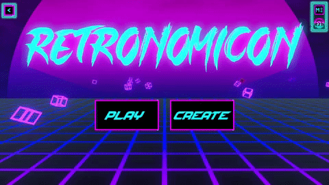
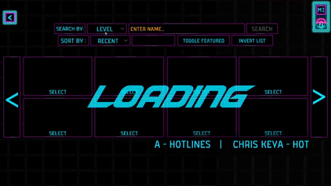
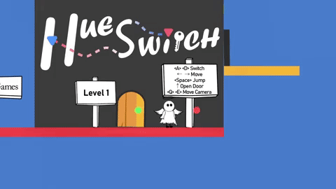
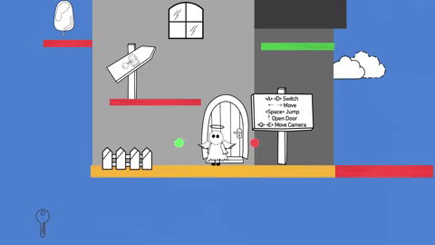
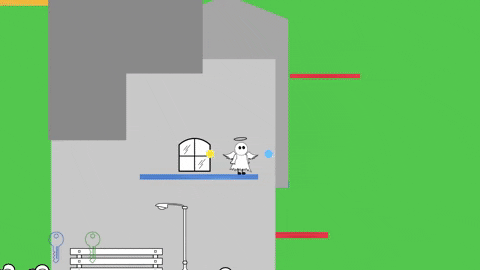
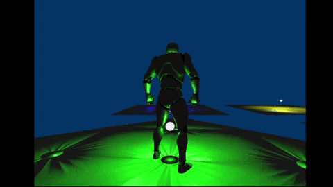
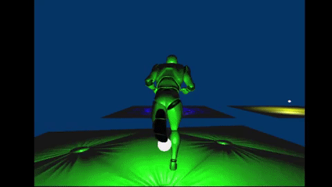
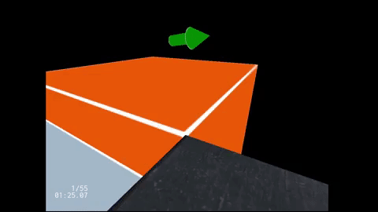
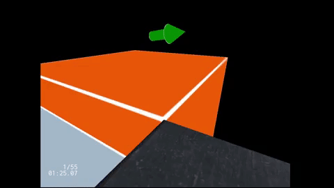

Larger Than Light


Description:
Larger Than Light is a narrative puzzle game where the player has to traverse a path of shadows by manipulating light. Follow
the story of two rival siblings, Skia and Lux, who have to work together in their adventure!
Role: Gameplay/Systems Programmer
- Developed a dynamic shadow collision system that uses 3D math and a convex hull algorithm to create 2D colliders over the shadows of 3D objects, allowing 2D platforming
- Optimize game performance by creating a segmenting system that cuts down the amount of shadow collisions and the rendering to textures, achieving greater than 60fps on average.
- Assisted our usability team in fixing reported game-breaking bugs, allowing for better gameplay experience
- Implemented other features such as Skia's squish detection and custom materials for 3D obstacles to fade but still cast shadows
Team size: 26 total, team of 4 programmers
Engine: Unity C#
Platform: Windows/Mac
Retronomicon
 

Description:
Retronomicon is a puzzle arcade game with a retro-style aethetic. The player
must figure out how to send a physics-driven ball towards the goal using obstacle
placement. The catch to this, however, is that the ball must travel the longest
path possible without hitting any dead zone in order to maximize your score!
Role: Gameplay & Shader Programmer
- Implemented core gameplay mechanics for a physics-driven puzzle game on mobile
- Implemented menu logic for scene navigation between levels and other menus
- Integrated art with programming by using Unity's shader graph to create shaders for materials, achieving a retro-style aesthetic
- Assisted other programmers in fixing bugs and maintaining a functioning game
Team size: 8 total, 6 programmers
Engine: Unity
Language: C#
Platform: Android
Released on: Google Play
Google Play store:
https://play.google.com/store/apps/details?id=com.ProjectObtuse.Retronomicon&hl=en_US&gl=US
HueSwitch
  
Description:
HueSwitch is a 2D puzzle platformer game that takes place in a 3D world. Most of the
world has lost its color, and it is up to an angel to restore color back to the world.
With the help of 4 colored spirits, the angel is able to rotate the world around
it and access parts of the world it couldn't before. Use the spirits' power to navigate
around and unlock all the doors that are hiding the stolen colors.
Role: Gameplay/Systems Programmer
- Implemented puzzle gameplay mechanics, sound system, level manager, menus, and character animation behavior
- Worked on a collider-generating tool, using 3D math, to help my designer partner do their job fluently with testing the game scene.
Team size: 2 - Solo Programmer
Engine: Unity C#
Platform: Windows/Mac
Game Engine
 
Description:
A simple game engine I worked on.
List of supported features:
- Physics: Gravity simulation, AABB collision detection, raycasting
- JSON parser and scene rendering based from JSON data
- Graphics: Real-time rendering using Direct3D 11, Phong shading using HLSL, normal mapping, and GPU skinning
- 3D skeletal animation using matrix math
- Multithreading for calculating 3D animations on separate thread
- Profiler for measuring performance
Role: Game Engine Programmer
Team size: Solo
Language: C++
Platform: Windows
Parkour's Edge


 

Description:
Parkour's Edge is a game about using parkour techniques to make it to the goal.
Role: Gameplay Programmer
- Implemented character controls, physics (AABB/AABB collisions, gravity simulations, and forces), UI rendering, checkpoint system, and wall/sliding mechanics for a parkour game
Team size: Solo
Language: C++
Platform: Windows